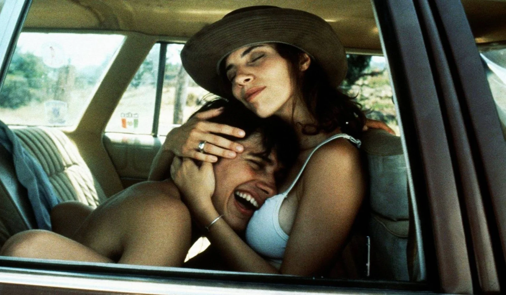
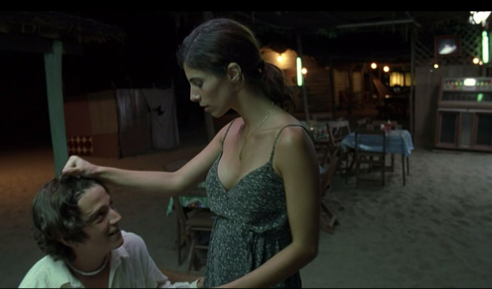
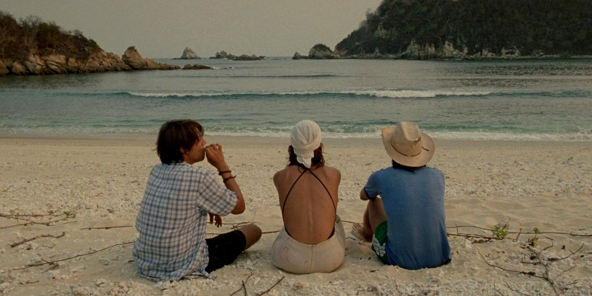

YTMT
RELACIONES ENTRE PERSONAJES

Tenoch y Julio
Tenoch y julio tienen una amistad demasiado fuerte, pero se nota que esta marcada por la competencia y las diferencias sociales. Mutuamente se consideran mejores amigos, pero a medida que el viaje transcurre se presentan celos, secretos y resentimientos en la relación. Su vínculo demuestra como una amistad puede semejar ser inseparable hasta que ciertas experiencias obligan a que ambos se enfrenten hacia lo que cada uno le ocultaba al otro.
Julio y Luisa
Julio es capaz de encontrar en Luisa una conexión la cual va mas allá de simplemente la atracción. A través de ella es que julio comienza a mostrar emociones y sus inseguridades que solia ocultar frente su amistad con Tenoch. La relación logra despertar los celos que sentia Julio hacia su amigo y deja expuesta la constante comparación que existe entre los dos amigos.


Tenoch y Luisa
La relación entre estos dos personajes comienza desde la atracción que siente Tenoch por Luisa, pero termina develando las inseguridades del joven. El intenta de verse seguro y maudro frente a ella, pero Luisa tiene mucha mas experiencia en la vida y la atraviesa de manera mas segura. Su vínculo presenta las diferencias entre una juventud despreocupada y una situación mucho mas profunda la cual esta atravesando Luisa.

Los tres
Los tres personajes viven el mismo viaje, pero cada uno lo vive de manera distinta. Para los jovenes, representa un paso hacia la adultez, mientras que para Luisa representa la libertad y una forma de aprovechar el poco tiempo que solo ella sabe que le queda. La convivencia entre ellos tres logra romper todo tipo de caracteristicas de una relación superficial y hace que salgan a la luz verdades las cuales hacen que cada uno cambie y asi transformando también sus relaciones.